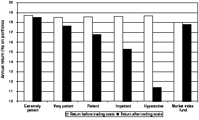
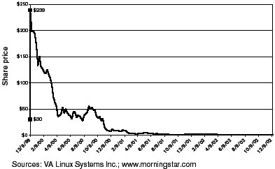

The punches you miss are the ones that wear you out.
—Boxing trainer Angelo Dundee
F or the aggressive as well as the defensive investor, what you don’t do is as important to your success as what you do. In this chapter, Graham lists his “don’ts” for aggressive investors. Here is a list for today.
High-yield bonds—which Graham calls “second-grade” or “lower-grade” and today are called “junk bonds”—get a brisk thumbs-down from Graham. In his day, it was too costly and cumbersome for an individual investor to diversify away the risks of default.; 1 (To learn how bad a default can be, and how carelessly even “sophisticated” professional bond investors can buy into one, see the sidebar on p. 146.) Today, however, more than 130 mutual funds specialize in junk bonds. These funds buy junk by the cartload; they hold dozens of different bonds. That mitigates Graham’s complaints about the difficulty of diversifying. (However, his bias against high-yield preferred stock remains valid, since there remains no cheap and widely available way to spread their risks.)
Since 1978, an annual average of 4.4% of the junk-bond market has gone into default—but, even after those defaults, junk bonds have still produced an annualized return of 10.5%, versus 8.6% for 10-year U.S. Treasury bonds. 2 Unfortunately, most junk-bond funds charge high fees and do a poor job of preserving the original principal amount of your investment. A junk fund could be appropriate if you are retired, are looking for extra monthly income to supplement your pension, and can tolerate temporary tumbles in value. If you work at a bank or other financial company, a sharp rise in interest rates could limit your raise or even threaten your job security—so a junk fund, which tends to outper-forms most other bond funds when interest rates rise, might make sense as a counterweight in your 401(k). A junk-bond fund, though, is only a minor option—not an obligation—for the intelligent investor.
A WORLD OF HURT FOR WORLDCOM BONDS
Buying a bond only for its yield is like getting married only for the sex. If the thing that attracted you in the first place dries up, you’ll find yourself asking, “What else is there?” When the answer is “Nothing,” spouses and bondholders alike end up with broken hearts.
On May 9, 2001, WorldCom, Inc. sold the biggest offering of bonds in U.S. corporate history—$11.9 billion worth. Among the eager beavers attracted by the yields of up to 8.3% were the California Public Employees’ Retirement System, one of the world’s largest pension funds; Retirement Systems of Alabama, whose managers later explained that “the higher yields” were “very attractive to us at the time they were purchased”; and the Strong Corporate Bond Fund, whose comanager was so fond of WorldCom’s fat yield that he boasted, “we’re getting paid more than enough extra income for the risk.” 1
But even a 30-second glance at WorldCom’s bond prospectus would have shown that these bonds had nothing to offer but their yield—and everything to lose. In two of the previous five years WorldCom’s pretax income (the company’s profits before it paid its dues to the IRS) fell short of covering its fixed charges (the costs of paying interest to its bondholders) by a stupendous $4.1 billion. WorldCom could cover those bond payments only by borrowing more money from banks. And now, with this mountainous new helping of bonds, WorldCom was fattening its interest costs by another $900 million per year! 2 Like Mr. Creosote in Monty Python’s The Meaning of Life, WorldCom was gorging itself to the bursting point.
No yield could ever be high enough to compensate an investor for risking that kind of explosion. The WorldCom bonds did produce fat yields of up to 8% for a few months. Then, as Graham would have predicted, the yield suddenly offered no shelter:
- WorldCom filed bankruptcy in July 2002.
- WorldCom admitted in August 2002 that it had overstated its earnings by more than $7 billion. 3
- WorldCom’s bonds defaulted when the company could no longer cover their interest charges; the bonds lost more than 80% of their original value.
Graham considered foreign bonds no better a bet than junk bonds. 3 Today, however, one variety of foreign bond may have some appeal for investors who can withstand plenty of risk. Roughly a dozen mutual funds specialize in bonds issued in emerging-market nations (or what used to be called “Third World countries”) like Brazil, Mexico, Nigeria, Russia, and Venezuela. No sane investor would put more than 10% of a total bond portfolio in spicy holdings like these. But emerging-markets bond funds seldom move in synch with the U.S. stock market, so they are one of the rare investments that are unlikely to drop merely because the Dow is down. That can give you a small corner of comfort in your portfolio just when you may need it most. 4
As we’ve already seen in Chapter 1, day trading—holding stocks for a few hours at a time—is one of the best weapons ever invented for committing financial suicide. Some of your trades might make money, most of your trades will lose money, but your broker will always make money.
And your own eagerness to buy or sell a stock can lower your return. Someone who is desperate to buy a stock can easily end up having to bid 10 cents higher than the most recent share price before any sellers will be willing to part with it. That extra cost, called “market impact,” never shows up on your brokerage statement, but it’s real. If you’re overeager to buy 1,000 shares of a stock and you drive its price up by just five cents, you’ve just cost yourself an invisible but very real $50. On the flip side, when panicky investors are frantic to sell a stock and they dump it for less than the most recent price, market impact hits home again.
The costs of trading wear away your returns like so many swipes of sandpaper. Buying or selling a hot little stock can cost 2% to 4% (or 4% to 8% for a “round-trip” buy-and-sell transaction). 5 If you put $1,000 into a stock, your trading costs could eat up roughly $40 before you even get started. Sell the stock, and you could fork over another 4% in trading expenses.
Oh, yes—there’s one other thing. When you trade instead of invest, you turn long-term gains (taxed at a maximum capital-gains rate of 20%) into ordinary income (taxed at a maximum rate of 38.6%).
Add it all up, and a stock trader needs to gain at least 10% just to break even on buying and selling a stock. 6 Anyone can do that once, by luck alone. To do it often enough to justify the obsessive attention it requires—plus the nightmarish stress it generates—is impossible.
Thousands of people have tried, and the evidence is clear: The more you trade, the less you keep.
Finance professors Brad Barber and Terrance Odean of the University of California examined the trading records of more than 66,000 customers of a major discount brokerage firm. From 1991 through 1996, these clients made more than 1.9 million trades. Before the costs of trading sandpapered away at their returns, the people in the study actually outperformed the market by an average of at least half a percentage point per year. But after trading costs, the most active of these traders—who shifted more than 20% of their stock holdings per month—went from beating the market to underperforming it by an abysmal 6.4 percentage points per year. The most patient investors, however—who traded a minuscule 0.2% of their total holdings in an average month—managed to outper-forms the market by a whisker, even after their trading costs. Instead of giving a huge hunk of their gains away to their brokers and the IRS, they got to keep almost everything. 7 For a look at these results, see Figure 6-1.
The lesson is clear: Don’t just do something, stand there. It’s time for everyone to acknowledge that the term “long-term investor” is redundant. A long-term investor is the only kind of investor there is. Someone who can’t hold on to stocks for more than a few months at a time is doomed to end up not as a victor but as a victim.
Among the get-rich-quick toxins that poisoned the mind of the investing public in the 1990s, one of the most lethal was the idea that you can build wealth by buying IPOs. An IPO is an “initial public offering,” or the first sale of a company’s stock to the public. At first blush, investing in IPOs sounds like a great idea—after all, if you’d bought 100 shares of Microsoft when it went public on March 13, 1986, your $2,100 investment would have grown to $720,000 by early 2003. 8 And finance professors Jay Ritter and William Schwert have shown that if you had spread a total of only $1,000 across every IPO in January 1960, at its offering price, sold out at the end of that month, then invested anew in each successive month’s crop of IPOs, your portfolio would have been worth more than $533 decillion by year-end 2001.
(On the printed page, that looks like this: $533,000,000,000,000,000,000,000,000,000,000,000.)
FIGURE 6-1
The Faster You Run, the Behinder You Get

Researchers Brad Barber and Terrance Odean divided thousands of traders into five tiers based on how often they turned over their holdings. Those who traded the least (at the left) kept most of their gains. But the impatient and hyperactive traders made their brokers rich, not themselves. (The bars at the far right show a market index fund for comparison.)
Source: Profs. Brad Barber, University of California at Davis, and Terrance Odean, University of California at Berkeley
Unfortunately, for every IPO like Microsoft that turns out to be a big winner, there are thousands of losers. The psychologists Daniel Kahnerman and Amos Tversky have shown when humans estimate the likelihood or frequency of an event, we make that judgment based not on how often the event has actually occurred, but on how vivid the past examples are. We all want to buy “the next Microsoft”—precisely because we know we missed buying the first Microsoft. But we conveniently overlook the fact that most other IPOs were terrible investments. You could have earned that $533 decillion gain only if you never missed a single one of the IPO market’s rare winners—a practical impossibility. Finally, most of the high returns on IPOs are captured by members of an exclusive private club—the big investment banks and fund houses that get shares at the initial (or “underwriting”) price, before the stock begins public trading. The biggest “run-ups” often occur in stocks so small that even many big investors can’t get any shares; there just aren’t enough to go around.
If, like nearly every investor, you can get access to IPOs only after their shares have rocketed above the exclusive initial price, your results will be terrible. From 1980 through 2001, if you had bought the average IPO at its first public closing price and held on for three years, you would have underperformed the market by more than 23 percentage points annually. 9
Perhaps no stock personifies the pipe dream of getting rich from IPOs better than VA Linux. “LNUX THE NEXT MSFT,” exulted an early owner; “BUY NOW, AND RETIRE IN FIVE YEARS FROM NOW.” 10 On December 9, 1999, the stock was placed at an initial public offering price of $30. But demand for the shares was so ferocious that when NASDAQ opened that morning, none of the initial owners of VA Linux would let go of any shares until the price hit $299. The stock peaked at $320 and closed at $239.25, a gain of 697.5% in a single day. But that gain was earned by only a handful of institutional traders; individual investors were almost entirely frozen out.
More important, buying IPOs is a bad idea because it flagrantly violates one of Graham’s most fundamental rules: No matter how many other people want to buy a stock, you should buy only if the stock is a cheap way to own a desirable business. At the peak price on day one, investors were valuing VA Linux’s shares at a total of $12.7 billion. What was the company’s business worth? Less than five years old, VA Linux had sold a cumulative total of $44 million worth of its software and services—but had lost $25 million in the process. In its most recent fiscal quarter, VA Linux had generated $15 million in sales but had lost $10 million on them. This business, then, was losing almost 70 cents on every dollar it took in. VA Linux’s accumulated deficit (the amount by which its total expenses had exceeded its income) was $30 million.
If VA Linux were a private company owned by the guy who lives next door, and he leaned over the picket fence and asked you how much you would pay to take his struggling little business off his hands, would you answer, “Oh, $12.7 billion sounds about right to me”? Or would you, instead, smile politely, turn back to your barbecue grill, and wonder what on earth your neighbor had been smoking? Relying exclusively on our own judgment, none of us would be caught dead agreeing to pay nearly $13 billion for a money-loser that was already $30 million in the hole.
But when we’re in public instead of in private, when valuation suddenly becomes a popularity contest, the price of a stock seems more important than the value of the business it represents. As long as someone else will pay even more than you did for a stock, why does it matter what the business is worth?
This chart shows why it matters.
FIGURE 6-2
The Legend of VA Linux

After going up like a bottle rocket on that first day of trading, VA Linux came down like a buttered brick. By December 9, 2002, three years to the day after the stock was at $239.50, VA Linux closed at $1.19 per share.
Weighing the evidence objectively, the intelligent investor should conclude that IPO does not stand only for “initial public offering.” More accurately, it is also shorthand for:
It’s Probably Overpriced,
Imaginary Profits Only,
Insiders’ Private Opportunity, or
Idiotic, Preposterous, and Outrageous.